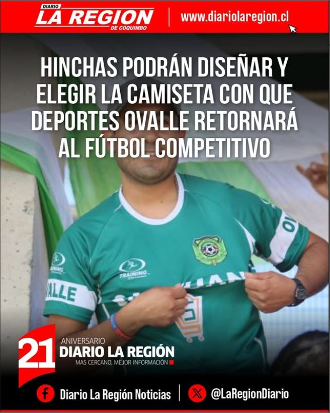
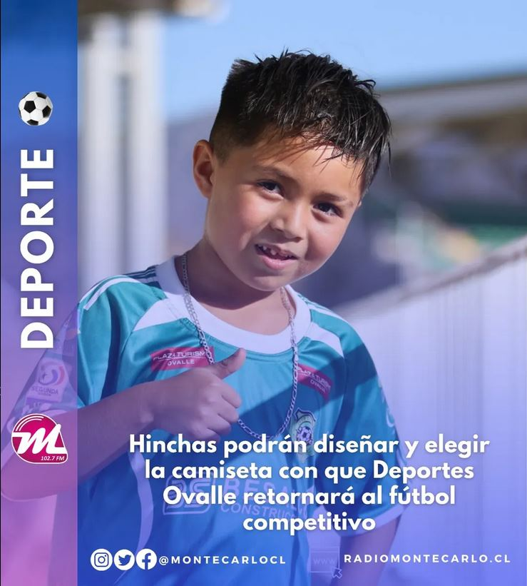
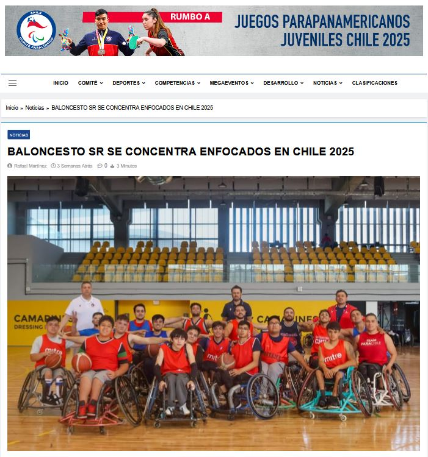
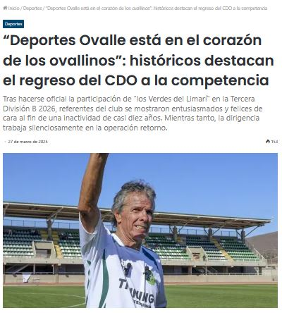
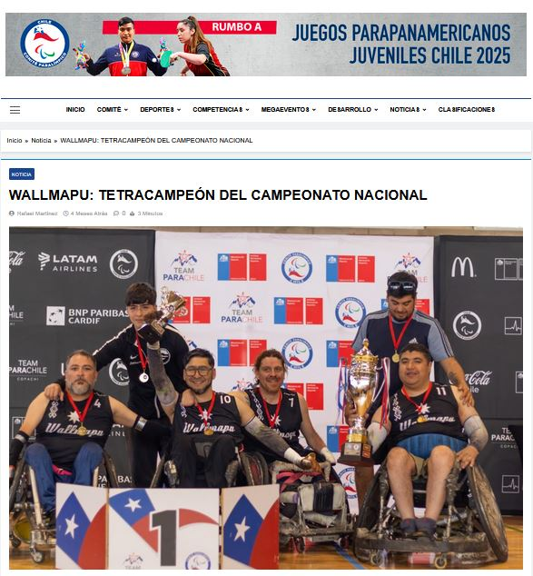
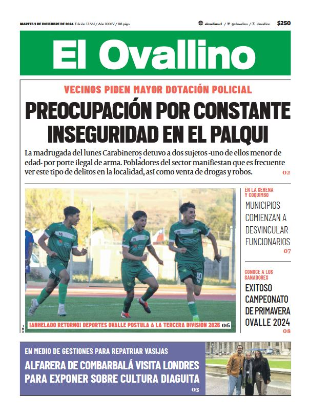
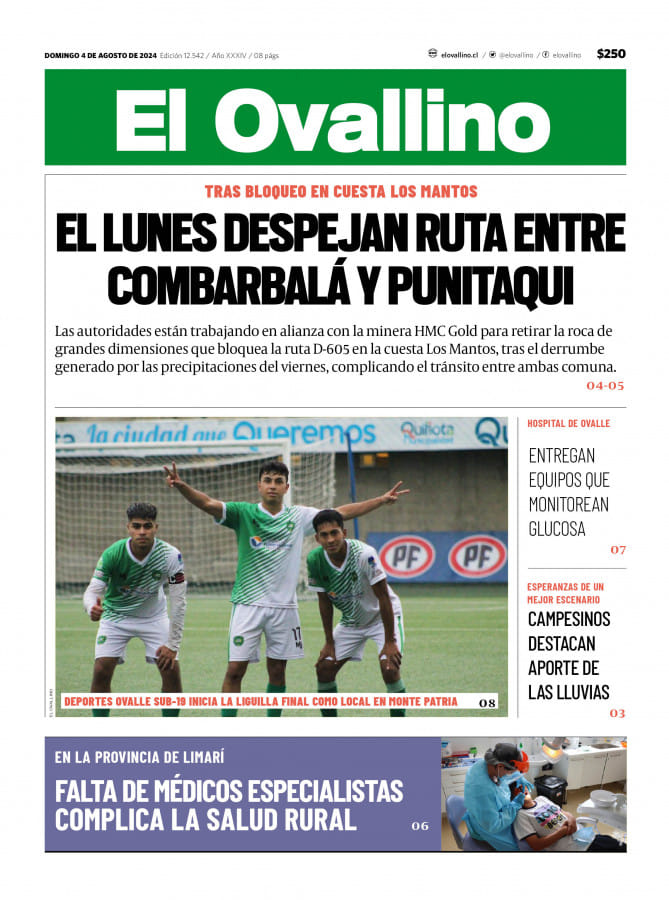

Hinchas podrán diseñar y elegir la camiseta de Deportes Ovalle
Diario La Región - 17 de abril, 2025
Ver artículo

Hinchas podrán diseñar y elegir la camiseta con que Deportes Ovalle retornará al fútbol competitivo
Radio Montecarlo - 17 de abril, 2025
Ver artículo
Hinchas podrán diseñar y elegir la camiseta de Deportes Ovalle
Diario El Día - 17 de abril, 2025
Ver artículo

El Team Para Chile de Baloncesto en Silla de Ruedas se concentra enfocado en los JJ.PP Juveniles Chile 2025
Comité Paralímpico de Chile - 31 de marzo, 2025
Ver artículo

"Deportes Ovalle está en el corazón de los Ovallinos": Históricos Destacan el regreso del CDO a la competencia
Radio Comunicativa - 27 de marzo, 2025
Ver artículo

Wallmapu: Tetracampeón del Campeonato Nacional de Rugby en Silla de Ruedas
Comité Paralímpico de Chile - 9 de diciembre, 2024
Ver artículo

¡Anhelado retorno! Deportes Ovalle postula a la tercera división 2025
Diario El Ovallino - 3 de diciembre, 2024
Ver artículo

Deportes Ovalle Sub-19 inicia la liguilla final como local en Monte Patria
Diario El Día - 4 de agosto, 2024
Ver artículo